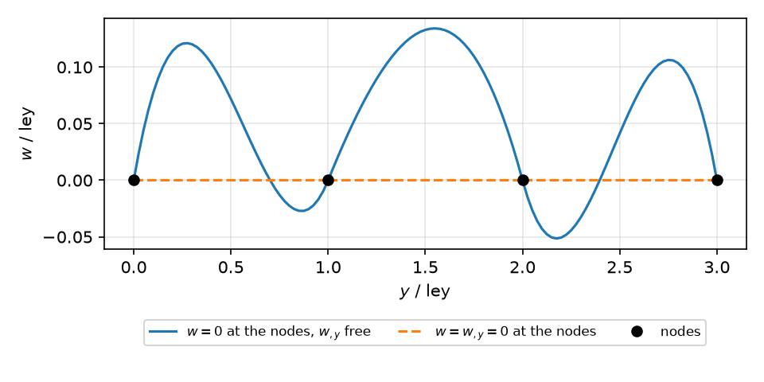

6. Assembling a model#
The library computes the contributions of one element; the mesh, the global
matrices, the boundary conditions and the loads are written by the user
with NumPy and SciPy. This chapter describes the data structures that
connect the element of The BFSC element on the cylinder to the global systems of
Analyses. The names are those of the bfsccylinder namespace;
bfsccylinder.sanders has the same names for the Sanders-type
element, with its own sizes.
6.1. Mesh of a closed cylinder#
The \(C^1\) continuity of the element requires a structured mesh of
rectangles along \(x\) and \(y\). A cylinder of length \(L\) is divided into
nx - 1 elements along \(x\) and ny elements around the circumference,
of sides lex = L/(nx - 1) and ley = 2*pi*R/ny. A grid of nx by
ny + 1 node numbers, \(x\) varying slowest, is closed around the
circumference by giving the last column the numbers of the first one; the
four nodes of each element are then taken from the corners of the grid in
the order of The BFSC element on the cylinder:
nids_mesh = (1 + np.arange(nx*(ny+1))).reshape(nx, ny+1)
nids_mesh[:, -1] = nids_mesh[:, 0]
n1s = nids_mesh[:-1, :-1].flatten()
n2s = nids_mesh[1:, :-1].flatten()
n3s = nids_mesh[1:, 1:].flatten()
n4s = nids_mesh[:-1, 1:].flatten()
With the index i of each node in the sorted unique numbers, the
positions are c1 = DOF*i for node 1, and likewise for the other nodes,
and the model has N = DOF*nx*ny degrees of freedom. The elements of the
last column share their nodes 3 and 4 with the nodes 2 and 1 of the first
column: the continuity of the degrees of freedom of the shared nodes closes
the shell, and no constraint is needed between \(\theta = 0\) and \(\theta =
2\pi\). An open panel has ny + 1 distinct columns of nodes. Elements of
different sizes along \(x\) or \(y\) are allowed as long as the grid stays
structured, each element having its own lex and ley.
With c = DOF*i, the slice u[6::DOF] of a global vector gives \(w\) at
all the nodes, u[0::DOF] gives \(u\), u[3::DOF] gives \(v\), and so on
for the ten degrees of freedom of The BFSC element on the cylinder, which is how the boundary
conditions, the loads and the results are addressed node by node.
6.2. Sparse arrays#
Each function update_K* and update_M() writes the entries of one
element in three 1-D arrays, the row indices, the column indices and the
values, at the positions init_k to init_k + SPARSE_SIZE - 1, with
init_k the attribute of the element for that matrix and SPARSE_SIZE
the number of entries per element of Element matrices and internal forces:
Function |
Position attribute |
Entries per element |
|---|---|---|
|
|
|
|
|
|
|
|
|
|
|
|
|
|
For num_elements elements the arrays have SPARSE_SIZE*num_elements
entries, of type INT for the indices and DOUBLE for the values, and
the element of index k gets init_k = k*SPARSE_SIZE. The global
matrix is the sum of the element matrices, the assembly
with \(\boldsymbol{L}_e\) the Boolean matrix that extracts the 40 degrees of
freedom of the element from the global vector; it is obtained by gathering
the three arrays in a sparse matrix of coordinate format, e.g. KC0 =
coo_matrix((KC0v, (KC0r, KC0c)), shape=(N, N)).tocsc(), which sums the
values at repeated positions, the entries of the nodes shared by several
elements. The elements write both triangles of each matrix, such that the
symmetric matrices come out symmetric and the unsymmetric load stiffness
matrix of a follower pressure is complete.
The functions overwrite the indices but add the values to the existing
ones. The value arrays reused for a new configuration, e.g. of
\(\boldsymbol{K}_{CNL}\) and \(\boldsymbol{K}_G\) at each iteration of a
nonlinear analysis, are zeroed first, e.g. KCNLv *= 0; the indices do
not change for a fixed mesh.
The vectors are assembled without position attributes:
update_fint() and update_fext_follower() add the vector of one
element to a global vector of size N, at the positions of its nodes, and
the functions that depend on the displacements read them from a global
vector of size N, copying those of the element to its attribute u.
6.3. Boundary conditions and loads#
Boundary conditions are imposed on degrees of freedom, selected by the slices above and by the coordinates of the nodes, and the global system is partitioned into the unknown and the constrained ones, Eq. (7.3). Because the derivatives are degrees of freedom, a condition on a derivative is imposed directly, e.g. a clamped end \(x\) = constant has \(w_{,x} = 0\) in addition to the conditions of a simple support, and a prescribed axial shortening is a known nonzero \(u\) at the nodes of an end.
The conditions are imposed at the nodes. Along an edge \(x\) = constant, \(w\)
is the cubic of \(w\) and \(w_{,y}\) of the nodes of the edge, and the normal
slope \(w_{,x}\) the cubic of \(w_{,x}\) and \(w_{,xy}\), see The BFSC element on the cylinder: \(w
= 0\) holds along the whole edge only when \(w_{,y}\) is constrained with \(w\),
and \(w_{,x} = 0\) only when \(w_{,xy}\) is constrained with \(w_{,x}\); likewise
\(u\) and \(v\) with \(u_{,y}\) and \(v_{,y}\). With only the values constrained,
the edge deforms between the nodes, as the figure shows for \(w\) along three
elements of an edge whose nodes have \(w = 0\) and \(w_{,y} = \cos(9 y/R)\),
with ley the side of the elements along \(y\).

The deviation is a discretisation error and vanishes with mesh refinement. In the linear buckling of the laminated cylinders Z22 and Z33 under axial compression, it is small for a simple support: with \(v = w = 0\) at the nodes, the largest \(w\) along the ends between the nodes is below 1 % of the largest \(w\) of the mode, and constraining \(v_{,y}\) and \(w_{,y}\) too changes the buckling load by less than 0.01 %. For a clamped end, \(u = v = w = w_{,x} = 0\) at the nodes, it is larger on coarse meshes: about 5 % of the largest \(w\) with 50 nodes around the circumference, and constraining \(u_{,y}\), \(v_{,y}\), \(w_{,y}\) and \(w_{,xy}\) too changes the buckling load by 0.2 to 1.3 %; with 90 nodes the deviation falls below 0.4 %.
A symmetry plane \(y\) = constant has the antisymmetric \(v\) zero and the symmetric fields with zero normal slope: \(v = v_{,x} = 0\) and \(u_{,y} = w_{,y} = w_{,xy} = 0\).
A concentrated force is a value of the global force vector at a degree of
freedom, e.g. at the position of \(w\) of a node for a normal force, and an
axial edge load is distributed over the nodes of the edge at the positions
of \(u\). The consistent force vector of a pressure is given by
update_fext_follower(), see Follower pressure. After the
solution of the reduced system, the solution is expanded to the size of the
model before it is given to the functions that depend on the displacements,
e.g. update_KG() or update_fint().